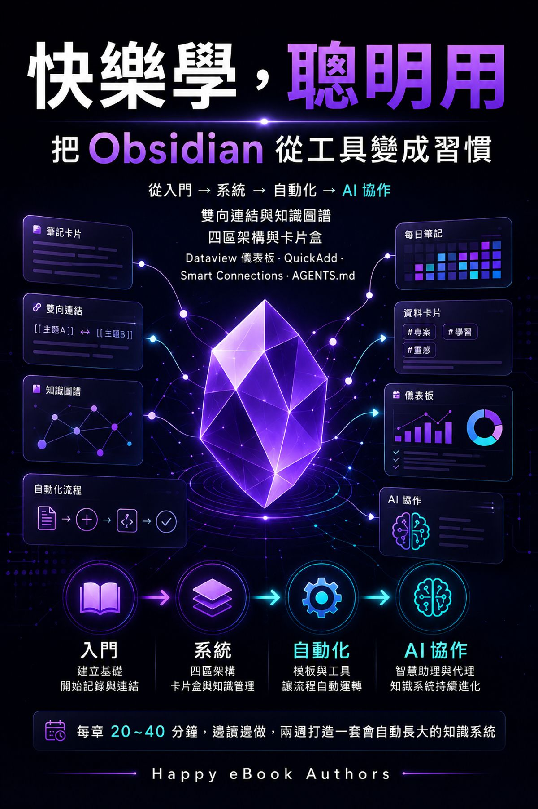

電子書
Obsidian 快樂學，聰明用
快樂學，聰明用——把 Obsidian 從工具變成習慣

Obsidian 快樂學，聰明用
快樂學，聰明用——把 Obsidian 從工具變成習慣
快樂學，聰明用——把 Obsidian 從工具變成習慣。本書從《Obsidian 入門》《做中學》《實例應用》《自動化實戰》四本實戰書中萃取精華，用最短的路徑走完「入門 → 系統 → 自動化 → AI 協作」的完整旅程：雙向連結與知識圖譜、四區架構與卡片盒、任務與專案管理、Dataview 儀表板、模板與 QuickAdd 自動化、Smart Connections 與 AGENTS.md 的 AI 協作。每章 20-40 分鐘，邊讀邊做，兩週就能擁有一套會自動長大的知識系統